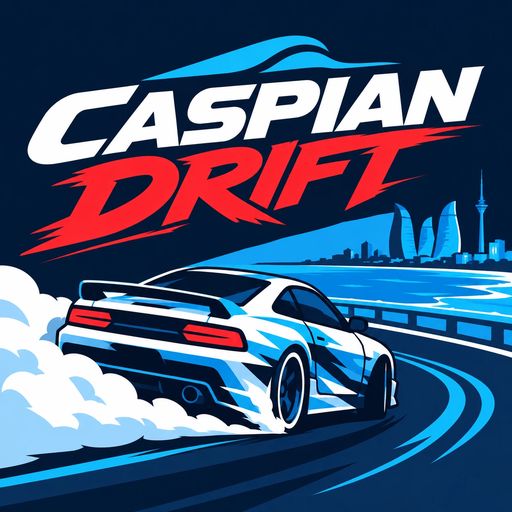

Caspian Drift
by Level Up Baku
Drift through Baku: dodge traffic, outrun the police and race the city circuit.
Floor it along the Caspian and drift through the streets of Baku!
Caspian Drift is a fast, one-thumb racer made in Baku by Level Up Baku. Slide between cars, scrape past them for near-miss bonuses and chain combos up to x5.
- Six routes across Azerbaijan, from the Baku Boulevard to Shahdag and Gabala
- A 36-level career with six bosses, and HARD versions of every level
- Endless, Police Chase, Time Attack, Two-Way, a Daily Challenge and a Weekly Cup
- Seven cars to buy, tune, upgrade and master, and over 30 paints
- A new Season Road every month
- Plays offline, in English, Azerbaijani, Russian and Turkish